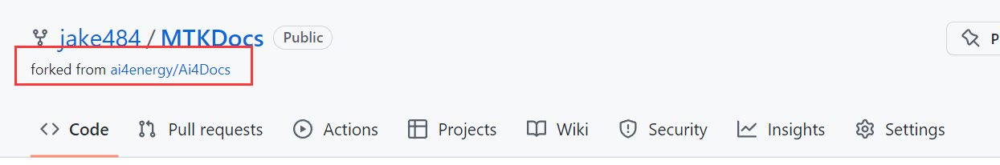
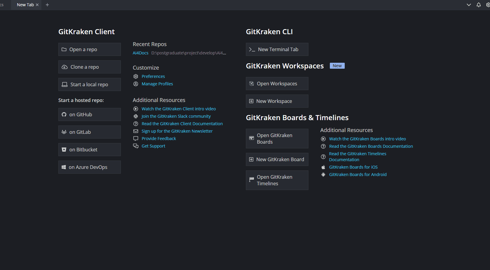
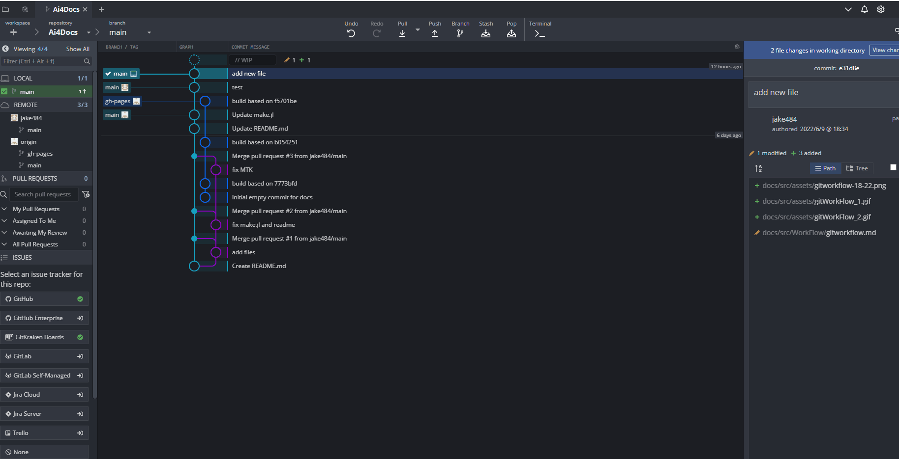

Ai4E组织合作开发流程
Contents：基于Gitkraken的合作开发流程
Contributor: YJY
Email:522432938@qq.com
如有错误，请批评指正。
Gitkraken为Git图形化软件。
预计实践时间：60min - 120min
开发流程简介
Github是一个非常流行的代码托管平台，上面有许许多多的前辈与“他们的牛逼代码”。为了充分与国际接轨，我们（Ai4Energy）组织也选择Github。
Ai4Energy组织可以视为一个大的代码仓库，每个人都可以向组织中贡献代码。Github基于Git，有完善且高效的多人协作的开发流程（所谓开发流程其实就是如何向Ai4Energy组织中提交代码做贡献）。
准备工作
- Github注册账户
- 下载Gitkraken
- 用Github账户登录Gitkraken（重要），然后建立Gitkraken的profile（个人形象，不重要）
- 建立SSH登录验证方式（点击下面的绿色按钮，Gitkraken自动生成并且上传），如下图。

稳定连接Github，推荐一个免费加速器Watt Toolkit，在微软应用商店。
接下来是开发的逻辑介绍。
开发逻辑
应用场景是这样的：
在某师兄云盘里有一份报告，师兄给2个师弟说你们合作把这份报告改一改（假设两位师弟一个在美国一个在日本，且不认识，只有云盘的地址）。小师弟先改第一版，大师弟改第二版。他们需要干以下的操作：
- 小师弟把文件先添加到自己的云盘资源里
- 假设云盘没有在线编辑功能，小师弟修改文件只有一种选择：把文件下载到本地修改。
- 小师弟修改报告
- 小师弟把修改完成的报告上传至自己的云盘。
- 修改完成之后，小师弟就可以对师兄说：我改完了，文件在我自己的云盘里，如果可以的话，我就把你的那一份原来的报告覆盖了。
接下来的选择就有两种：
- 师兄说：改的不错，覆盖吧。然后大师弟重复1-5步骤
- 师兄说：改的不行，重改吧。然后小师弟重复2-5步骤
以上，就是我们工作流程的实际内涵：
1: 这个行为叫Fork。Fork的意思是在自己的个人账号下建立一个一样的别人的仓库，而且会显示你这个仓库是fork别人的。 
2: 这个行为叫Pull。一般而言，第一次在本地建仓时，会自动Pull。本地仓库建好了，若云端仓库文件有更新，这个时候本地文件要更新的话，就有相应的Pull操作。 
3: 这个行为叫开发🤣。
4: 这个行为叫Push。 
5: 这个行为叫Pull Request（合并到主分支）。为要先推送到自己仓库的副本而不是直接覆盖别人的那个仓库呢？🤣
整体的逻辑图如下：

操作步骤与方法
方法对应以上5个步骤。
Step1: Fork

Step2: Pull
首先是本地建仓：

拉取之后点击Open Now，我们就能看到操作页面。同时在左侧需要点击Add。GitKraken自动检测到我们Fork了一个包，它会认为你可能需要通过修改别人的代码然后上传到你自己的库里，所以它给了一个添加自己Fork的库的一个选项（如果点上，也可以手动添加远程仓库）。

在Step2中，如果是从自己Fork的仓库地址建立本地仓库，也可以，只不过要手动添加Ai4的远程地址了。
中间的蓝色绿色圈是啥呢？是文件修改的记录。
Step3: 本地进行内容编辑——开发
Step4: Push
编辑完成之后（任何改动都会被检测到）有几个关键步骤：
- 给本次修改命名，表示干了什么（例如：add a file）
- 右边上方暂存修改
- 右边底下提交更改
- 在修改的圈那里右键，点击UpStream，修改推送地点。一定要选择自己的库，组织的库没有权限推送上去。
- 最后点击
Push

Step5: Pull Request（合并到主分支）
Gitkraken有图形化的方式创建Pull Request。如下：

Pull Request就是申请将你做的修改合并到Ai4的某个仓库（任何别人的仓库）。
为什么能合并呢？因为首先把别人的库给拉取过来了，只是做了一些修改（增加或删减内容），仓库的“根”是一致的所以能合并。就类似，小师弟把师兄的文件复制过来了，在它的基础上改，改完之后把自己的内容复制，在师兄的文件中覆盖粘贴，这是没有问题的。 所以，如果选择两个不同“根”的仓库去Pull Request，那是行不通的。
完成之后，就等“师兄审核”吧！
这是一套基于Gitkraken的简版Git合作开发流程，如果有兴趣，可以去了解原汁原味的Git。相关的资料很多！
实践
Ai4Energy中有一个test.jl。完成以下内容：
- 完成一次上述开发过程，形成具象认知。
- 开发内容：在
test.jl库中的src文件夹中，添加编辑一个xxx.jl的文件，（xxx为自己的名字，中文，便于"师兄审核"） - 文件内容任意。期望针对文档给出改进建议，也可以是一段Julia代码。
以上是一个简单的流程，对于Git或Gitkraken来说只是冰山一角。遇到任何疑问与问题，积极思考原因，可以自行查阅相关资料，也可以积极的和Ai4组的同学交流。